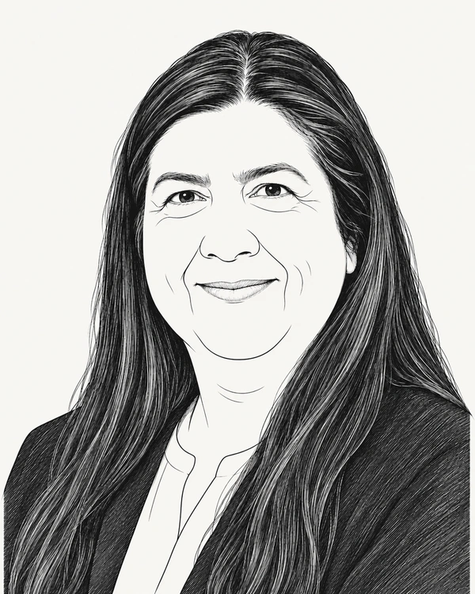
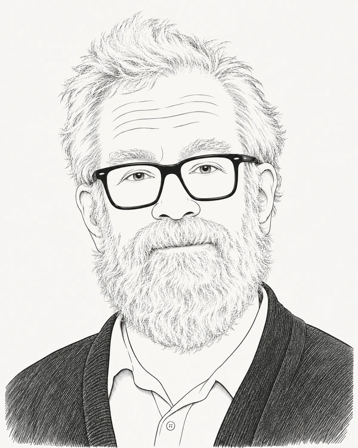
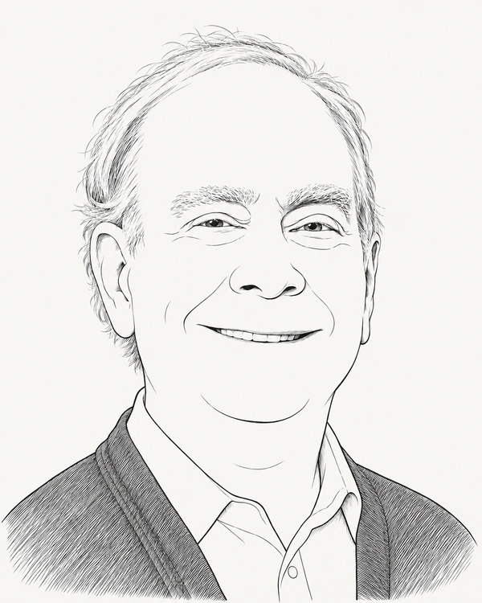

CAVE · portrait review
Carolina Cruz-Neira, Daniel J. Sandin and Thomas A. DeFanti.
Three new-pose studies in the approved Jepsen 2.3 pen style. Connected on the review branch to the new hall 7 CAVE label. Not yet deployed. Source-photo publication rights remain uncertain where recorded.
Photo evidence and verdicts · Visual review · Free-picture search · Portrait entries · Exact prompts
Carolina Cruz-Neira

600 × 750 WebP · source-based study
Actual 72 × 90 label size
UCF photograph published March 2026, reused July 2026; VARLab structure photo undated, in a 2025 upload directory.
Daniel J. Sandin

600 × 750 WebP · source-based study
Actual 72 × 90 label size
Interview dated 2024; poster processed in September 2026. Earlier side view is structure only.
Thomas A. DeFanti

600 × 750 WebP · source-based study
Actual 72 × 90 label size
HPCwire 2026 feature, portrait in November 2026 directory; capture date unknown. Earlier university portrait is structure only.
Source photos and face crops are private research material. The private ZIP adds twelve source/drawing comparison sheets, a measurement sheet and a comparison with the existing museum drawings. No outside image is loaded by this gallery; source links open only when clicked.